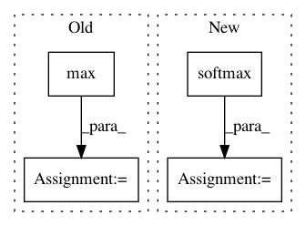

049c293a83ba05d11956568a5c1835757a09e4ef,dnc/sparse_memory.py,SparseMemory,read_from_sparse_memory,#SparseMemory#Any#Any#Any#Any#,142
Before Change
for batch in range(b):
distances, positions = indexes[batch].search(keys[batch], k=self.K)
distances = distances / max(distances)
read_weights.append(distances)
read_positions.append(positions)
After Change
for batch in range(b):
distances, positions = indexes[batch].search(keys[batch])
distances = F.softmax(distances)
read_weights.append(distances)
read_positions.append(T.clamp(positions, 0, self.mem_size-1))
In pattern: SUPERPATTERN
Frequency: 3
Non-data size: 4
Instances
Project Name: ixaxaar/pytorch-dnc
Commit Name: 049c293a83ba05d11956568a5c1835757a09e4ef
Time: 2017-11-30
Author: root@ixaxaar.in
File Name: dnc/sparse_memory.py
Class Name: SparseMemory
Method Name: read_from_sparse_memory
Project Name: IBM/adversarial-robustness-toolbox
Commit Name: 8acacf7ecdddd031366f2c044bdc6ce5ba8e5a62
Time: 2018-10-04
Author: Maria-Irina.Nicolae@ibm.com
File Name: art/classifiers/mxnet.py
Class Name: MXTextClassifier
Method Name: predict_from_embedding
Project Name: interactiveaudiolab/nussl
Commit Name: 0c529108875e37dc67276ee6247f0703da9c28db
Time: 2019-04-25
Author: prem@u.northwestern.edu
File Name: nussl/separation/clustering/clusterers.py
Class Name: KMeansConfidence
Method Name: confidence